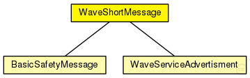

This documentation is released under the Creative Commons license
This documentation is released under the Creative Commons license(no description)
The following diagram shows usage relationships between types. Unresolved types are missing from the diagram.
The following diagram shows inheritance relationships for this type. Unresolved types are missing from the diagram.
| Name | Type | Description |
|---|---|---|
| BasicSafetyMessage | packet | (no description) |
| WaveServiceAdvertisment | packet | (no description) |
| Name | Type | Description |
|---|---|---|
| wsmVersion | int |
Version of the Wave Short Message |
| securityType | int |
Determine which security mechanism was used |
| channelNumber | int |
Channel Number on which this packet was sent |
| dataRate | int |
Data rate with which this packet was sent |
| userPriority | int |
User priority with which this packet was sent (note the AC mapping rules in Mac1609_4::mapUserPriority) |
| psid | int |
Unique number to identify the service |
| psc | string |
Provider Service Context |
| wsmLength | int |
Length of Wave Short Message |
| wsmData | string |
Data of Wave Short Message |
| senderAddress | int | |
| recipientAddress | int | |
| serial | int | |
| timestamp | simtime_t |
packet WaveShortMessage { //Version of the Wave Short Message int wsmVersion = 0; //Determine which security mechanism was used int securityType = 0; //Channel Number on which this packet was sent int channelNumber; //Data rate with which this packet was sent int dataRate = 1; //User priority with which this packet was sent (note the AC mapping rules in Mac1609_4::mapUserPriority) int userPriority = 7; //Unique number to identify the service int psid = 0; //Provider Service Context string psc = "Service with some Data"; //Length of Wave Short Message int wsmLength; //Data of Wave Short Message string wsmData = "Some Data"; int senderAddress = 0; int recipientAddress = -1; int serial = 0; simtime_t timestamp = 0; }
This documentation is released under the Creative Commons license